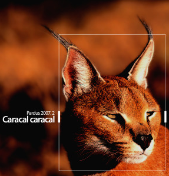

|
Pardus 2007.2 Caracal caracal |
|

The second maintenance release for Pardus 2007 is out! Download Pardus 2007.2, codenamed Caracal caracal.
 What's New What's New
 Pardus speaks French, Italian and Catalan
// It is possible to install Pardus in French, Italian and Catalan besides Turkish, English, Spanish, German, Dutch and Brazilian Portuguese.
Pardus speaks French, Italian and Catalan
// It is possible to install Pardus in French, Italian and Catalan besides Turkish, English, Spanish, German, Dutch and Brazilian Portuguese.
Up-to-date applications
// Pardus 2007.2 users will enjoy KDE 3.5.7 with the latest release of more than 400 software packages...
Package manager
// PiSi is now much faster in searching packages. More and more packages are available for download.
Better network management
// PEAP-MSCHAPv2 authentication is available in network-manager. Handling wireless networks are much more secure.
Jmicron support
// Pardus was among the first distros to include Jmicron controller support, and now it is provided out-of-the-box.
And what remains the same
Pardus comes with internet tools, office suite, multimedia
(picture, music, video, etc) players, games and numerous
applications populated in a single CD to answer needs of desktop
users.
Quick links
|
|
| Pardus News |
June, 29, 2007
// An early Pardus 2007.2 RC review from soepher.com states: "It's
really very usable, user friendly and excellent out of the box -
this might just be one release worth watching. Go try Pardus Linux
and you really shouldn't be disappointed". Read the whole review here.
May, 25, 2007
// İsmail Dönmez (head of security team) presents how Pardus project successfully handles security updates, together with
Pardus mission and vision towards a secure desktop system.
May, 13, 2007
// Onlamp.com has published an interesting article, "Rethinking the Linux distribution", mentioning Pardus in various places inside. Read the
original article here, and share
your thoughts here.
May, 13, 2007
// "Remember the name Pardus because it may be one of the surprise successes of this year.": Yet another nice review from
Soepher.com.
March 23, 2007
// Gebruiktelaptop just started selling Compaq laptops with Pardus preinstalled
March 19, 2007
// The long awaited Pardus newsletter #3 is just out. See what Pardus developers and users are busy with here.
March 18, 2007
// A report about how Python language is used for Pardus development is published. Read at here
|
|